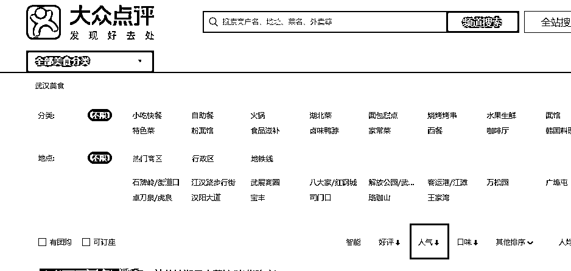

来源：https://sxv52sy063.feishu.cn/docx/XZSNd18lloG4Fgx8rQpc9blHntg
我用uibot做了一个基于城市的美食热门餐厅top榜单机器人，通过机器人得到的数据不仅能让你能快速知道目的地的热门美食，供你打卡决策；还能基于消费者真实评价的AI分析内容，助你轻松创作小红书或者大众点评的笔记内容。
我叫tide，是12月才加入生财的新人，也是在生财第一次听说RPA这个工具。因为实际工作中经常有一些需要批量手动操作的工作内容，初步了解知道RPA恰好能高效自动化解决标准的，可描述清楚的、重复性的操作内容，于是报名了RPA航海。也正是跟着航海的内容一步步实操，让我慢慢走进RPA大门，惊叹工具的高效率和稳定性，RPA果真是提效神器，有种相见恨晚的感觉！
这篇文章将详细拆解热门美食机器人的功能实现，保姆级的教你用UiBot完成这个机器人，后面也会附上机器人的源码，供你直接使用，让我们一起开始RPA提效之旅。
先要特别特别感谢航海教练@Leeka，没有她的精准思路指导、热心无保留的帮助以及日常日志的鼓励，就不会让我坚定信心，这么快有这个机器人的设计落地和这篇文章的梳理完成。
其次要感谢航海领队@陈石宇，他鼓励我积极分享，帮我链接教练，才让我能够有这次的分享输出。
最后还要感谢手册制作和直播教练@阿愚呱呱，虽然没有单独接触，但手册和直播的保姆级教程让我受益匪浅，让我这个RPA小白轻松入门。
下面正式开始分享~
作为一个餐饮营销策划运营人，需要定期的去关注城市的热门餐厅各项核心数据，以及分析餐厅的评价内容，这项操作是标准化的重复操作，而且需求实现逻辑不算太复杂，基本大部分都在RPA航海内容的知识范围内，于是开始考虑落地实现它，让机器人不知疲倦的为我工作！
作为非餐饮行业人员，可能每到一个城市前，你都要为打卡哪些美食而做一番攻略，如果有一个机器人，你指定好关键词，就能快速帮你列出这个城市的热门美食，你再根据机器人输出结果中的数据项（比如品类、人均、推荐菜、商家评分等）就能更快的筛选出自己喜欢的热门餐厅，供自己选择打卡啦！
小红书的旅游项目，目的地会涉及到美食环节的推荐，而推荐哪些美食，从哪些维度推荐，推荐的内容怎么写，都可以通过设计一个机器人，一次抓取出结果，作为小红书创作的原素材之一。
从个人身份匹配
它可以为你初步筛选各地人气餐厅，让你快速选择出去打卡拔草的餐厅
它是你的评价内容和笔记内容的源泉，助你快速创作评价和笔记
它是你快速高效分析市场行情，观察同行的提效利器，再也不用手动爬数据
它可以作为你的创作方向和直接创作内容 的素材库
从项目角度匹配
它可以为你罗列城市热门餐厅的基本信息，也可以为你生成热门餐厅的推荐文案
它可以为你创作《全国各地美食人气指 南》 这样一个系列文章，提供源源不断的素材库
它可以为你操作大众点评达人矩阵，快速提供笔记内容，助你快速批量产出内容，快速成长，更快变现。
机器人运行视频：
输出的结果数据表：
生财RPA航海中使用的RPA设计工具：UiBot 和 Chrome 浏览器 工具详细介绍和下载可点击直达 👉 12月RPA航海手册2.1章内容
说明：这里不是标准的业务流程图，准确来说是简易版的机器人模块组装的逻辑流程图，基本包含了机器人模块组装的所有步骤。
在机器人落地前，先整理功能流程，能让你对整个机器人的运行逻辑，做到心中有数，而详细的画出流程图，就会让你更有把握能实现你想要的功能，不至于想的时候天马行空，实际落地组装时，没有能力落地。
所以很有必要先画出详细的流程图，这里花的时间越多，做的越细，后面模块组装就越轻松！
环境初始化（关闭相关应用）：目的是为了关闭机器人执行过程中需要启动的应用，避免多次打开应用而影响机器人的正常运行。
打开表格
启动浏览器并打开网页：
以上模块组装在航海里有非常详细的讲解，也可以点击直达航海现场：👉12月RPA航海-初始化环境和打开操作
模块每行说明如下：
①读取参数表中的内容，并准备放入到页面搜索框中

②三个模拟按键模块完成【搜索目标城市】并确认，进入城市首页功能

③点击美食标签，进入城市美食页，点击人气，得到人气列表
（不涉及元素特征值的编辑，直接点击目标元素，按下图选择好目标元素即可）

④用UiBot的数据抓取功能抓取页面想要的数据，按下图的顺序选择抓取即可
⑤遍历抓取的数据，将数据写入 【人气排行表】 中
在数据抓取功能中，UiBot会把抓取到多组相关联的数据放到一个数组中，数组是一种变量类型。
而当我们需要把数组中的每个数据一条条列出来的时候，就需要循环遍历这个数组
成功得到城市人气美食商家的表格数据：

模块每行说明如下：
①循环获取每个商家的评分、各项评分，这里初始值和结束值即排名第1到第10的商家，可按需修改
②读取【人气排行表】中的评价链接，并打开链接页面
③进入页面底部，点击 【更多评价】 元素，进入新的页面
为什么这里还要 点击 【更多评价】 进入新的页面 再进行操作，而不是就在此页获取，不是多此一举吗？
因为在上述的商家页面中，虽然有商家评分、商家各项分，以及评价内容，但是因为如果有大众点评好友评论过这家店，或者自己评价过这家店，那么该页面将出现变化。
我们去填写元素特征值的时候，可能会导致部分商家的页面元素特征值匹配不到（因为页面结构发生了变化），而在一个循环里操作，我们是需要每个商家页面都能匹配到元素特征的。
而当我们进入更多评价页后，发现这个页面不受上述那些因素的干扰，每个商家的页面都是一致的，所以就有了这步操作。
④获取页面商家评分 和各项评分
⑤写入人气排行表中
至此，人气排行表 中的数据项 全部获得得到，完成!
模块每行说明如下：
①筛选好评，进入商家好评列表
②循环点击 展开评价元素
这里为什么要点击 展开评价 ？为什么还要循环？为什么要用尝试执行模块？为什么要跳出循环？
所以这里加一个尝试模块：本来循环最多是要进行15次的，可是因为上述的原因，导致其实只有14个，或者13个（反正最多15个）【 展开评价】按钮
那么我就尝试去执行15次，一旦它点击不到这个元素了，那说明所有的都点完了，你再往下循环去点击，机器人就会报错罢工，说目标元素找不到。那我就直接捕获错误，既然你全部点击完了，点击不到了，就不需要再执行后续的循环，此时跳出循环即可~
以上说的有一点点绕，但是这一块是我在设计时，踩得最大的一个坑，花了很多时间才排查到，所以啰嗦一点~
③抓取评价内容
这里得到的是一个评价内容数组，考虑到演示，这里我没有设置翻页，所以默认就是抓取第一个页的15条评价内容，如果需要抓取更多评价内容，在数据抓取时选择翻页，并在数据抓取模块中设置需要翻几页，抓取多少条数据即可。
④将店名和评价具体内容，写入 【AI处理评价表】 中
至此，我们得到了如下数据：
⑤关闭标签页面
因为循环打开各商家页，会导致网页很多，每次取完数据，关闭相应网页，可以节约系统资源。
至此，一次循环的操作就全部完成了。
模块每行说明如下：
①打开讯飞星火主页：
②读取参数表中的指令：
③读取所有好评内容，并与前面参数表的指令拼接，得到完整指令
④在讯飞星火页面新建对话，并将指令粘贴进对话框，发送提示语
我们给讯飞星火的实际提示词如下：
你是一名资深的小红书博主，精通编写小红书爆款文案，请通过分析提炼我给你的一家餐厅的好评内容，写一篇推荐该餐厅的小红书文案，字数在200-300字之间，要求添加emoji表情，好评内容如下：
【抓取到的评价内容】
红色的部分是参数表中我们写入的提示词，而灰色的部分是我们获取的该餐厅真实好评的所有内容。
ps：这里看出来一些弊端，因为没有ChatGPT的相关经验，提示词写的太粗暴简单~
⑤判断内容是否生成完毕
生成内容完毕后，有此按钮，循环判断有此按钮即可
⑥获取生成的内容
这里没有点击那个复制按钮，而是直接用的获取生成内容框中 的文本内容。因为操作中发现，用复制按钮的方式 粘贴进表格中后，生成内容中的emoji表情失效，而后一种方式保存成功，所以用了此方式。
⑦将内容写入表格
至此，机器人全部配置完成
撒花~
此前的我，因为没有接触ChatGPT的相关经验，所以就换成了讯飞星火，当然，我的提示词还不是非常完善，所以也就导致了AI生成的总结，看起来并不那么理想。
后期可以试着优化相关的promot，能让AI生成的评价更加符合我们的要求。点击这里可以直达学习ChatGPT👉 12月ChatGPT航海手册
在设计机器人时，诸如要获取排名前多少的商家，获取多少商家的评价内容的数量，对多少商家获取评价内容，对多少商家进行评价内容的AI分析。
诸如此类数值上的需求，均是通过设计机器人时的循环次数来定义的，其实可以将这些数值放入参数表中，通过提前在Excel里设置好相关的参数
即可让机器人在原有基础上，获取排名前多少名的商家、获取多少商家的评价内容数量、（如果商家的评价内容数量不够了呢？这个要怎么解决？）以及对整个商家评价的AI分析，以及用AI来分析同一个地方同一个菜系，针对不同的用户需求，而进行排序推荐。
举个栗子：如何用它来为小红书旅游项目赋能：
可以按照这些思路，来创作小红书笔记
美食地图、特种兵xx一日游吃点啥、或是按照需求来推荐餐厅，譬如最适合表白的餐厅、最适合邀请外地朋友吃的本地餐厅、本地人最推荐的xx菜系
所有机器人的功能和流程都是可以不断随着需求迭代和进化的，总之一句话，有逻辑的、重复的操作过程，都可以交给机器人，它不知疲惫，没有情绪的为你干活，挺香的
这些问题是@Leeka 教练根据她在几个航海群的观察总结，给到我的，我就按我的理解简单分享，希望给RPA新人一点启发。
作为实操和技术技能为主的RPA航海，如果是RPA新人，那么就和我一样，从航海手册的第一字开始看吧，并且还要做到边看边实操。
最开始建议不要跳着看，很多知识有连贯性，前面的没看，后面的就不太懂了。航海手册就是航海的全部内容，几乎99%的内容都可以在里面找到答案。
实操到哪步，就关注哪步的问题，每个人的进度不一样，不要这山望着那山高，连在窗口输出调试信息都还没实操过，就开始担心我的小红书抓取机器人会不会运行成功，不要太心急哈~
UiBot在实际操作过程中，会有很多细节问题，如果心态着急，想追航海的进度，可以把教练配置好的机器人直接导入。
不过，直接复制教练的模块，可能会出现元素找不到、表格参数填的不对、表格删除数据的方式不对等等各种小问题。
所以首先一定要复刻手册里的每一个机器人，而不是复制机器人，100%复刻，就是对着手册，每一个模块自己配置，并严格按照步骤来，比如：功能模块三步走“选择、摆放、设置”，目标元素的标记按照“221”法则，再比如对于新人，每个机器人的手动操作过程和流程图最好自己都写出来，画出来。
大家可能都想追求时间上的最高效化，遇到问题直接问。
但其实RPA的操作不像其它项目，因为偏技术，有很多问题会因为大家用的操作环境的不同，以及我们提问时忘了全面的截图截屏展示操作过程，可能教练还要花时间与你沟通你的各个操作细节，去定位你的错误，所以其实频繁提问，解决问题的效率反而不那么高。
如前面所言，航海手册基本能解决99%的问题，严格按照手册来，很多问题都会避免。另外，群里的交流比较活跃，不用去关注每条信息，打乱你自己的航海节奏。
遇到问题，先去手册里找答案，然后在群聊记录里搜关键词，或许你的问题就大概率解决了，如果都没有找到答案，再过一下自己的细节，再去提问，这样效率可能会更高哦。
首先，机器人的流程逻辑十分重要，所以作为新人，一定要自己把机器人的流程图画出来，看一遍教练画好的，和自己亲手画一遍流程图，对机器人逻辑的理解是不一样的。
其次，前面说到了复刻机器人，在配置过程中，随着航海的深入，肯定会有更多的模块出现，遇到自己理解难度大一点的模块，比如try 模块，数组遍历模块等。
我们可以单独新建一个测试流程，去单独测试这些功能模块的运行逻辑，这样避免了你在整个流程中，因为涉及到很多参数的传递，不好测试某个具体的模块的难题。
这样的好处是，你只有弄懂了每个具体模块的功能和用法，才能更好的使用它，对每个当初理解难的模块，做好思考笔记，后面偶尔回顾。这样，当你经历了画流程图，对整个流程逻辑的练习，以及每个模块的具体用法和运行逻辑的测试，你就能更好的做到举一反三了。
首先要明确一个观点：流程逻辑是最重要的，具体实现技术并不那么重要，别看后面的实操机器人模块很多，感觉很复杂，吃不消。
其实把流程梳理一遍，发现不就是我们前面用到的一些模块在反复操作吗，那么多模块摆放不过都是纸老虎。只要我们捋顺了流程逻辑，然后对着流程，去摆放模块就好了。
当然，在模块摆放中，会不断出现新的模块使用，这时候，我们做好一个学习者，乖乖记笔记，对这种新功能模块，一定要做好使用场景的笔记，以便自己更好的消化，就记住，我运行的每一个机器人，里面使用的每一个模块，我都清楚它的运行逻辑和使用场景，就很好了。
不要只追求把机器人成功运行，那是道，而不是术，而要追求理解每一个模块，怎样更好的理解，前面说过，专门针对这个模块做一个测试流程，会更直观。
这样下来，你掌握了很多模块的使用，当再有新的机器人需求，你要做的不过是理清逻辑顺序和流程，至于后面的模块组装，因为你每个模块都有专门研究，不就比较简单了嘛。
我整理了几个RPA学习的辅助资料，除了RPA航海手册领你进门，后面的还可以让你在RPA之路上越走越远。
都是基于UiBot的工具哈~
点击下载 ：
航海即将结束了，从20几天前第一次听说RPA，到能做出为自己提效的小机器人，心里备受鼓舞。因为这份鼓舞，也让我有动力，毫无保留的进行这样一次分享，希望许多没有接触或者刚刚接触RPA的圈友，能够给到你们一点点启发。希望自己能不断坚持，让RPA机器人帮自己工作提效。
最后，大家一起 生财有术 ~